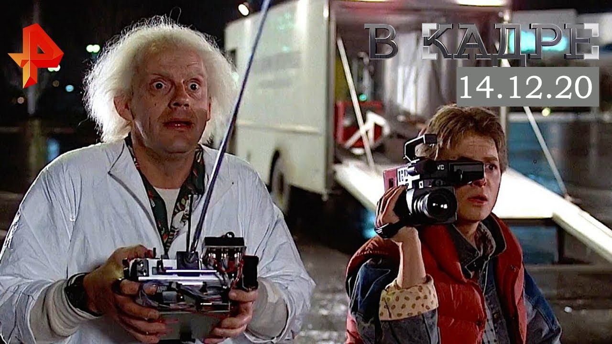
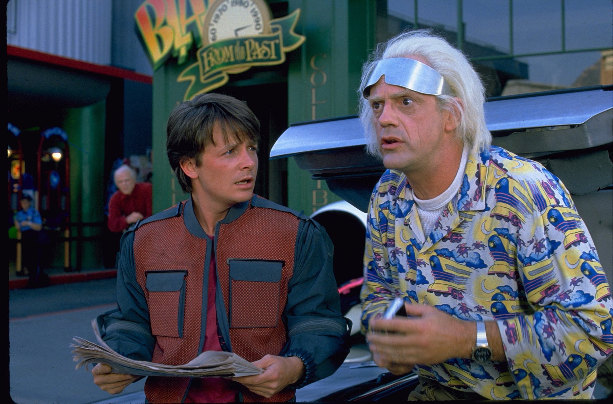
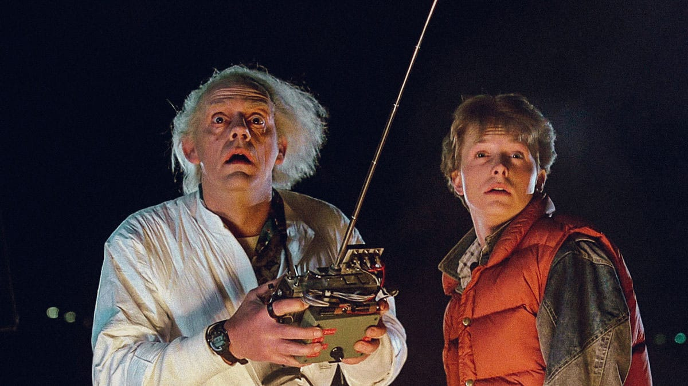
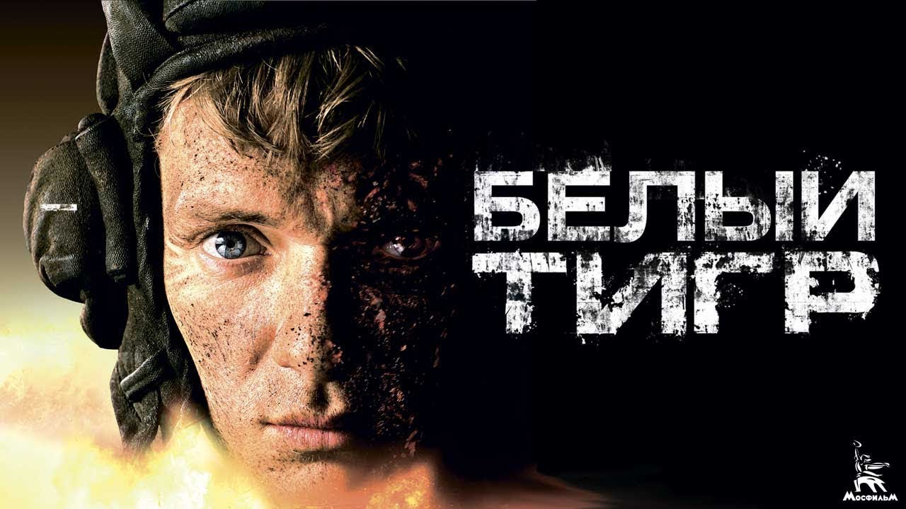
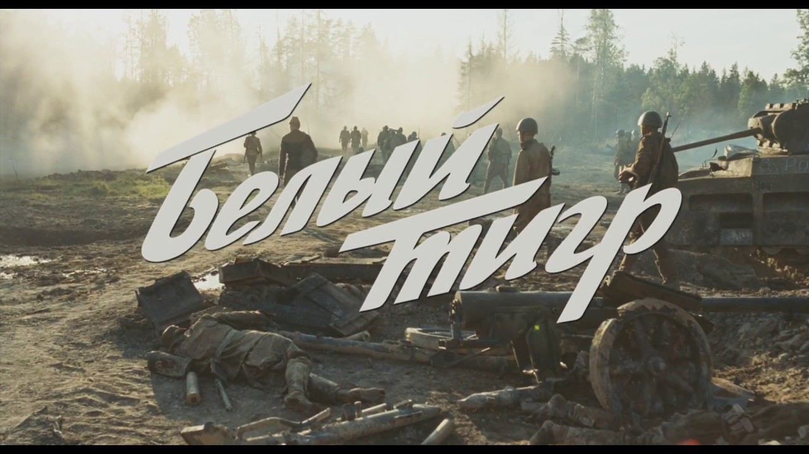
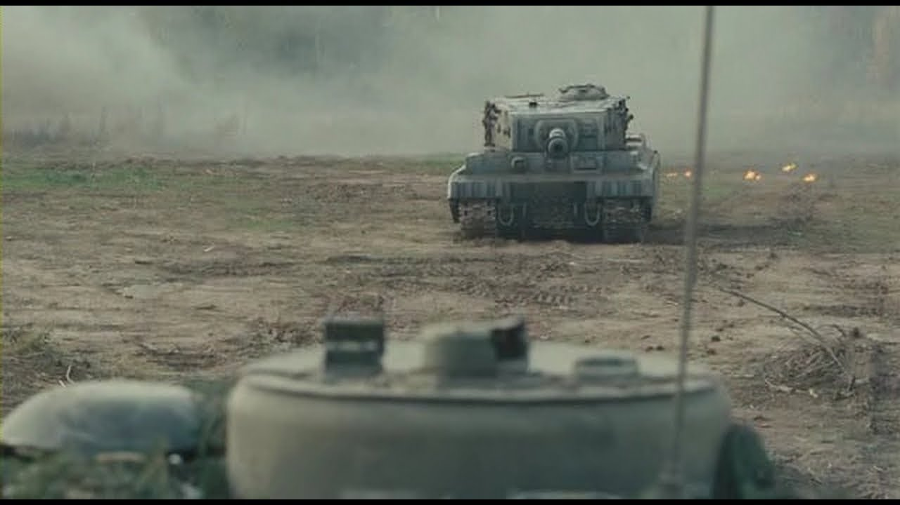
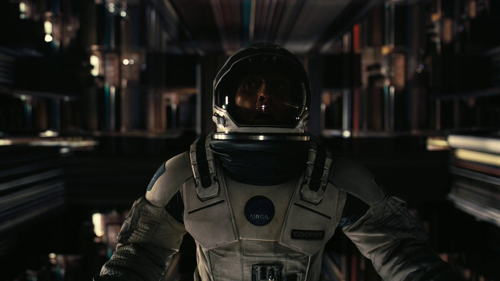
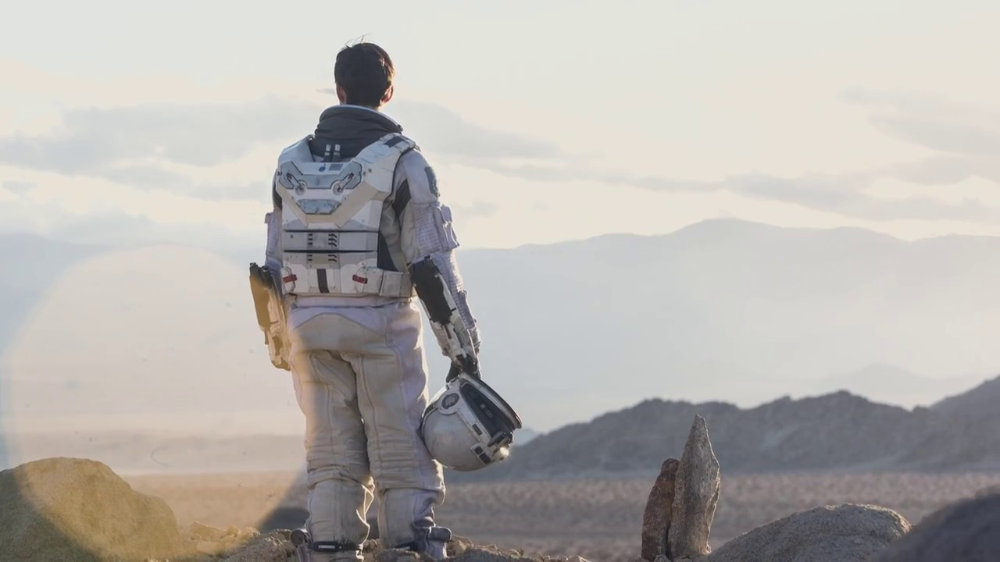
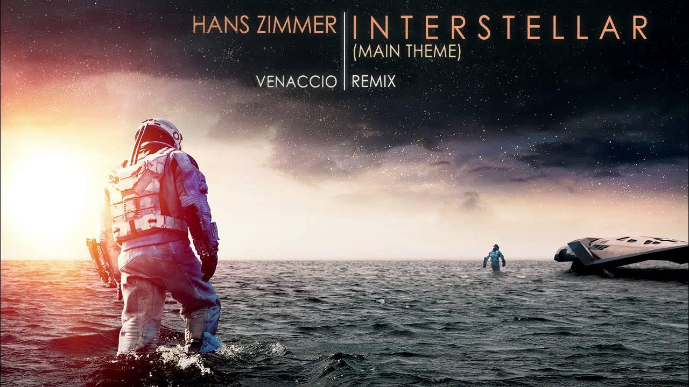

Назад в будущее — американский научно-фантастический фильм режиссёра Роберта Земекиса.
  | Год | 1985 |
|---|---|
| Страна | США |
| Жанр | Научная фантасика, комедия |
| Режиссер | Роберт Земекис |
Российский полнометражный, военно-фантастический художественный фильм режиссёра Карена Шахназарова, снятый в 2012 году по мотивам романа Ильи Бояшова «Танкист, или „Белый тигр“» и повествующий о событиях времён Великой Отечественной войны.
  | Год | 2012 |
|---|---|
| Страна | Россия |
| Жанр | Военная фантасика |
| Режиссер | Карен Шахназаров |
Эпическая научно-фантастическая драма 2014 года, девятый полнометражный фильм режиссёра Кристофера Нолана, который написал сценарий в соавторстве со своим братом Джонатаном.
  | Год | 2014 |
|---|---|
| Страна | США и Великобритания |
| Жанр | Научная фантастика, приключения |
| Режиссер | Кристофер Нолан |